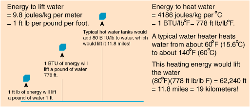
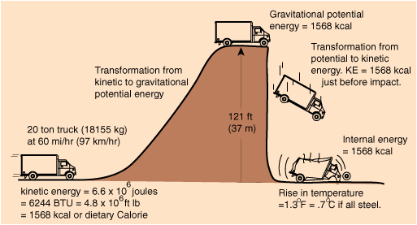

Lifting vs Heating WaterIn a highrise building, all of the water which is used on the upper floors must be lifted to those heights. It must be a major expenditure of energy! It is instructive to compare the energy used to lift the water to that necessary to heat the water in a hot water tank.  The moral to this story is that any energy conservation strategy, whether personal or national, should focus on heating and cooling applications because they are much more energy intensive than are strictly mechanical operations! |
Index Energy concepts Physical units |
| HyperPhysics***** Mechanics | Go Back |
Energy of a Truck |
Index Energy concepts Physical units |
| HyperPhysics***** Mechanics | Go Back |
Energy FormsEnergy can be defined as the capacity for doing work, but that capacity can reside in many different forms. Broad forms such as mechanical, electrical, chemical, nuclear, solar can be envisioned. Large amounts of energy exist in the form of internal energy within objects at normal temperatures. As several of the energy examples point out, the processes of heating and cooling are much more energy intensive than purely mechanical processes. Almost any process in nature can be viewed as some kind of energy transfer process. While it is not practical to try to categorize all the kinds of energy transfer processes, we can state that none of them involve any net gain or loss of energy. The principal of conservation of energy constrains the kind of processes which can occur in nature. |
Index Energy concepts Physical units |
| HyperPhysics***** Mechanics | Go Back |